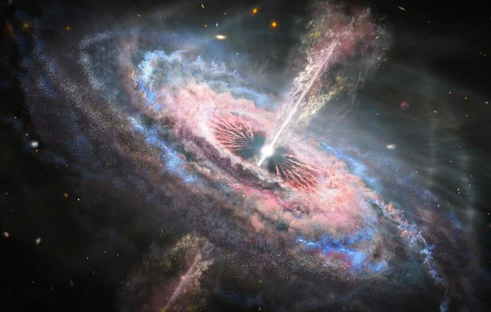
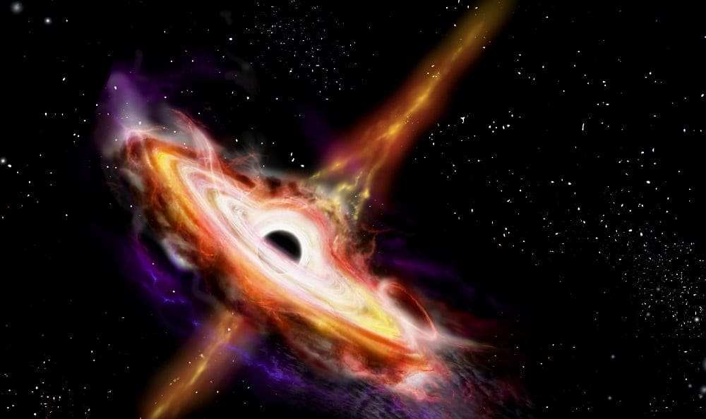

Frequentemente no campo da ciência, algumas das descobertas mais fascinantes surgem de situações incríveis. Coisas que, sinceramente, parecem ser tão extraordinárias que quase desafiam a nossa noção de realidade. Isso geralmente ocorre devido à nossa tendência de presumir que possuímos um conhecimento abrangente, o que nem sempre é verdade e, na maioria das vezes, é inverídico.
Alan Doom, um cartunista, imaginou uma solução para esses mistérios e a apresentou por meio de uma tirinha no jornal New York Times. Sua sugestão era que pequenos extraterrestres estavam vindo à Terra para roubar as latas de lixo. Embora fosse uma piada, essa tirinha provocou um efeito inesperado: deu início a um debate moderno sobre a existência de vida extraterrestre.
A história que pretendo relatar hoje tem início em 1960, quando um novo ramo da astronomia estava em seus estágios iniciais: a radioastronomia. Nesse período, cientistas se empenhavam em mapear o céu noturno, catalogando todos os objetos possíveis. Isso se mostrou intrigante porque, por muito tempo, nossa observação se limitou ao espectro de luz visível, uma fração pequena do vasto espectro eletromagnético que existe. Isso é comparável a tentar enxergar à noite, quando nossa visão é limitada. No entanto, assim como óculos de visão noturna nos revelam detalhes ocultos, ao iniciarmos o catálogo do céu noturno na radioastronomia, logo nos deparamos com galáxias que irradiavam luz em frequências de rádio. Contudo, em 1960, o astrônomo Alan Sandage fez uma observação intrigante. Em meio à escuridão do céu noturno, exatamente onde se detectavam ondas de rádio, ele notou algo comum. Diferentemente da maioria dos objetos emitindo rádio, esse não assemelhava-se a uma galáxia. Era um ponto que se assemelhava imensamente a uma estrela. Esse objeto foi denominado de 3C48.
Ainda mais curioso era o fato de que o espectro de emissão dessa "estrela" não correspondia a nenhum elemento ou composto conhecido. Geralmente, quando a matéria em alta temperatura emite luz, lacunas características aparecem nessa luz, formando um espectro de emissão, que é essencialmente uma impressão digital dos elementos presentes. Por exemplo, o hidrogênio não emite luz em faixas específicas e isso é válido para todo hidrogênio no universo. O mesmo princípio se aplica a todos os outros elementos da tabela periódica. Para identificar a composição de um objeto, mede-se seu espectro de emissão e o compara com os espectros conhecidos. Se coincidirem, sabemos de que estrela ou galáxia se trata.
Quando esse objeto, que inexplicavelmente não apresentava o espectro de emissão de qualquer elemento conhecido, foi inicialmente observado, causou perplexidade. Sem uma explicação plausível, o mistério foi temporariamente deixado de lado. Enquanto isso, um grupo de astrônomos australianos examinou outro objeto que emitia ondas de rádio, o 3C273. Diferentemente do primeiro objeto mencionado, a localização exata desse ainda era desconhecida. No entanto, após a passagem da lua em sua frente em 1962, sua localização precisa foi determinada. Descobriu-se então que havia na verdade duas fontes de ondas de rádio, uma mais intensa e outra menos. Uma observação subsequente, utilizando luz visível, revelou o que parecia ser uma estrela azul fraca, sendo a fonte de menor intensidade das ondas. Na busca pela segunda fonte, que era mais intensa, um telescópio maior foi empregado, revelando o que parecia ser um jato de luz. Ao medir o espectro de luz emitido por essa estranha estrela, assim como no primeiro caso, as linhas de emissão diferiam de qualquer elemento conhecido. Essa discrepância levou a um momento de surpresa.
As linhas de emissão eram na verdade reconhecíveis, sendo as do hidrogênio, o elemento mais abundante no universo. Contudo, essas linhas estavam deslocadas para o vermelho, um fenômeno conhecido como "redshift", e eram maiores do que qualquer coisa já observada, tornando essa explicação insatisfatória. O redshift é uma consequência do efeito Doppler, em que o deslocamento para o vermelho ocorre quando uma fonte se afasta, indicando que esses objetos estavam se afastando a velocidades imensas, da ordem de 16% e 37% da velocidade da luz.
Isso era contraditório com a Lei de Hubble, uma relação entre a distância e o redshift observada por Edwin Hubble, que até então havia medido um redshift máximo de 1%, indicando velocidades de afastamento muito menores. Agora, estava sendo observado um afastamento muito maior. No entanto, um fato curioso era que, ao aplicar a Lei de Hubble a esses objetos, eles estavam a bilhões de anos-luz de distância, o que levou à pergunta: como esses objetos tão distantes poderiam ser fontes de rádio tão intensas no céu?
À medida que a história avançava, observou-se que o 3C48 variava em brilho nas frequências de rádio em intervalos inferiores a um dia. Isso, por si só, era notável, mas de acordo com a regra astronômica, um objeto não poderia variar mais rápido do que o tempo que a luz leva para cruzá-lo completamente, fornecendo uma pista sobre o tamanho. E, de fato, o 3C48 tinha aproximadamente o tamanho do sistema solar.
A descoberta desses objetos, mais tarde denominados quasares (abreviação para "quasi-stellar"), revelou uma das maiores incógnitas da astronomia: como objetos tão compactos podiam emitir tanta energia? A resposta estava nos buracos negros. A energia espetacular dos quasares, capazes de produzir até 100 mil vezes a energia da nossa galáxia inteira, provinha da matéria que espiralava em direção a buracos negros supermassivos. Essas partículas são aceleradas a velocidades extremas antes de serem consumidas, irradiando energia que é visível mesmo à distância de bilhões de anos-luz.
A jornada de descoberta dos quasares exemplifica o processo científico em tempo real, evidenciando que raramente possuímos todos os detalhes corretamente desde o início. O conhecimento humano é uma jornada incessante, sempre evoluindo e revelando novas perspectivas. A ciência é uma busca constante pela verdade, uma exploração profunda da realidade que nos envolve. Obrigada e até a próxima!
Saiba mais no vídeo a seguir:
s